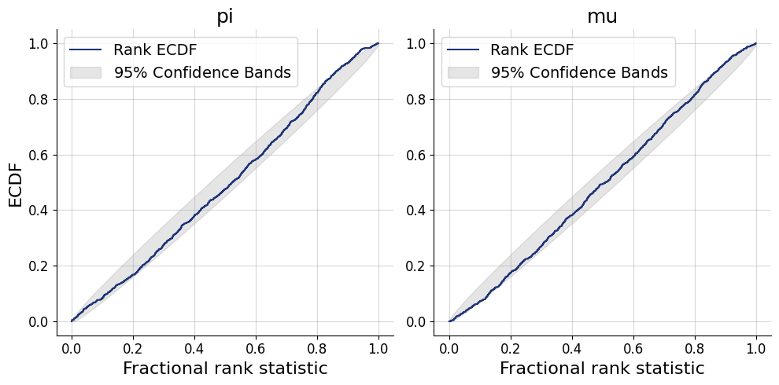

import os
os.environ["KERAS_BACKEND"] = "tensorflow"
import keras
import bayesflow as bf
import numpy as np
import matplotlib.pyplot as pltdef prior():
pi = np.random.dirichlet([2, 2])
mu = np.random.normal()
return dict(pi=pi, mu=mu)
def likelihood(pi, mu, n=200):
ns = np.random.multinomial(n=n, pvals=pi)
y = np.zeros(n)
y[:ns[0].item()] = np.random.normal(mu, size=ns[0])
y[ns[0].item():] = np.random.standard_cauchy(size=ns[1]) + mu
z = np.eye(2, dtype="int32")
z = np.repeat(z, ns, axis=0)
return dict(z=z, y=y)
def transform(pi):
return dict(pi=pi[0])
simulator = bf.make_simulator([prior, likelihood, transform])df = simulator.sample(10)adapter = (bf.Adapter()
.as_set("y")
.constrain("pi", lower=0, upper=1)
.concatenate(["pi", "mu"], into="inference_variables")
.rename("y", "summary_variables")
.drop("z")
)workflow = bf.BasicWorkflow(
inference_network = bf.networks.CouplingFlow(transform="affine"),
summary_network = bf.networks.DeepSet(),
adapter = adapter,
simulator = simulator,
inference_variables = ["pi", "mu"],
summary_variables = ["y"]
)history = workflow.fit_online(epochs=20, batch_size=128, num_batches_per_epoch=100)INFO:bayesflow:Fitting on dataset instance of OnlineDataset.
INFO:bayesflow:Building on a test batch.Epoch 1/20
100/100 ━━━━━━━━━━━━━━━━━━━━ 27s 186ms/step - loss: 1.4484 - loss/inference_loss: 1.4484
Epoch 2/20
100/100 ━━━━━━━━━━━━━━━━━━━━ 19s 194ms/step - loss: 0.7425 - loss/inference_loss: 0.7425
Epoch 3/20
100/100 ━━━━━━━━━━━━━━━━━━━━ 19s 194ms/step - loss: 0.4552 - loss/inference_loss: 0.4552
Epoch 4/20
100/100 ━━━━━━━━━━━━━━━━━━━━ 19s 193ms/step - loss: 0.2808 - loss/inference_loss: 0.2808
Epoch 5/20
100/100 ━━━━━━━━━━━━━━━━━━━━ 20s 196ms/step - loss: 0.1813 - loss/inference_loss: 0.1813
Epoch 6/20
100/100 ━━━━━━━━━━━━━━━━━━━━ 20s 196ms/step - loss: 0.1368 - loss/inference_loss: 0.1368
Epoch 7/20
100/100 ━━━━━━━━━━━━━━━━━━━━ 19s 194ms/step - loss: 0.0509 - loss/inference_loss: 0.0509
Epoch 8/20
100/100 ━━━━━━━━━━━━━━━━━━━━ 20s 195ms/step - loss: 0.0604 - loss/inference_loss: 0.0604
Epoch 9/20
100/100 ━━━━━━━━━━━━━━━━━━━━ 20s 199ms/step - loss: -0.0315 - loss/inference_loss: -0.0315
Epoch 10/20
100/100 ━━━━━━━━━━━━━━━━━━━━ 20s 199ms/step - loss: -0.0429 - loss/inference_loss: -0.0429
Epoch 11/20
100/100 ━━━━━━━━━━━━━━━━━━━━ 19s 194ms/step - loss: -0.0629 - loss/inference_loss: -0.0629
Epoch 12/20
100/100 ━━━━━━━━━━━━━━━━━━━━ 20s 201ms/step - loss: -0.0774 - loss/inference_loss: -0.0774
Epoch 13/20
5/100 ━━━━━━━━━━━━━━━━━━━━ 18s 198ms/step - loss: -0.1039 - loss/inference_loss: -0.1039--------------------------------------------------------------------------- KeyboardInterrupt Traceback (most recent call last) Cell In[13], line 1 ----> 1 history = workflow.fit_online(epochs=20, batch_size=128, num_batches_per_epoch=100) File ~/miniconda3/envs/bayesflow-seminar/lib/python3.11/site-packages/bayesflow/workflows/basic_workflow.py:715, in BasicWorkflow.fit_online(self, epochs, num_batches_per_epoch, batch_size, keep_optimizer, validation_data, **kwargs) 681 """ 682 Train the approximator using an online data-generating process. The dataset is dynamically generated during 683 training, making this approach suitable for scenarios where generating new simulations is computationally cheap. (...) 708 metric evolution over epochs. 709 """ 711 dataset = OnlineDataset( 712 simulator=self.simulator, batch_size=batch_size, num_batches=num_batches_per_epoch, adapter=self.adapter 713 ) --> 715 return self._fit( 716 dataset, epochs, strategy="online", keep_optimizer=keep_optimizer, validation_data=validation_data, **kwargs 717 ) File ~/miniconda3/envs/bayesflow-seminar/lib/python3.11/site-packages/bayesflow/workflows/basic_workflow.py:858, in BasicWorkflow._fit(self, dataset, epochs, strategy, keep_optimizer, validation_data, **kwargs) 855 self.approximator.compile(optimizer=self.optimizer, metrics=kwargs.pop("metrics", None)) 857 try: --> 858 self.history = self.approximator.fit( 859 dataset=dataset, epochs=epochs, validation_data=validation_data, **kwargs 860 ) 861 self._on_training_finished() 862 return self.history File ~/miniconda3/envs/bayesflow-seminar/lib/python3.11/site-packages/bayesflow/approximators/continuous_approximator.py:202, in ContinuousApproximator.fit(self, *args, **kwargs) 150 def fit(self, *args, **kwargs): 151 """ 152 Trains the approximator on the provided dataset or on-demand data generated from the given simulator. 153 If `dataset` is not provided, a dataset is built from the `simulator`. (...) 200 If both `dataset` and `simulator` are provided or neither is provided. 201 """ --> 202 return super().fit(*args, **kwargs, adapter=self.adapter) File ~/miniconda3/envs/bayesflow-seminar/lib/python3.11/site-packages/bayesflow/approximators/approximator.py:136, in Approximator.fit(self, dataset, simulator, **kwargs) 133 mock_data = keras.tree.map_structure(keras.ops.convert_to_tensor, mock_data) 134 self.build_from_data(mock_data) --> 136 return super().fit(dataset=dataset, **kwargs) File ~/miniconda3/envs/bayesflow-seminar/lib/python3.11/site-packages/bayesflow/approximators/backend_approximators/backend_approximator.py:22, in BackendApproximator.fit(self, dataset, **kwargs) 21 def fit(self, *, dataset: keras.utils.PyDataset, **kwargs): ---> 22 return super().fit(x=dataset, y=None, **filter_kwargs(kwargs, super().fit)) File ~/miniconda3/envs/bayesflow-seminar/lib/python3.11/site-packages/keras/src/utils/traceback_utils.py:117, in filter_traceback.<locals>.error_handler(*args, **kwargs) 115 filtered_tb = None 116 try: --> 117 return fn(*args, **kwargs) 118 except Exception as e: 119 filtered_tb = _process_traceback_frames(e.__traceback__) File ~/miniconda3/envs/bayesflow-seminar/lib/python3.11/site-packages/keras/src/backend/tensorflow/trainer.py:371, in TensorFlowTrainer.fit(self, x, y, batch_size, epochs, verbose, callbacks, validation_split, validation_data, shuffle, class_weight, sample_weight, initial_epoch, steps_per_epoch, validation_steps, validation_batch_size, validation_freq) 369 for step, iterator in epoch_iterator: 370 callbacks.on_train_batch_begin(step) --> 371 logs = self.train_function(iterator) 372 callbacks.on_train_batch_end(step, logs) 373 if self.stop_training: File ~/miniconda3/envs/bayesflow-seminar/lib/python3.11/site-packages/keras/src/backend/tensorflow/trainer.py:219, in TensorFlowTrainer._make_function.<locals>.function(iterator) 215 def function(iterator): 216 if isinstance( 217 iterator, (tf.data.Iterator, tf.distribute.DistributedIterator) 218 ): --> 219 opt_outputs = multi_step_on_iterator(iterator) 220 if not opt_outputs.has_value(): 221 raise StopIteration File ~/miniconda3/envs/bayesflow-seminar/lib/python3.11/site-packages/tensorflow/python/util/traceback_utils.py:150, in filter_traceback.<locals>.error_handler(*args, **kwargs) 148 filtered_tb = None 149 try: --> 150 return fn(*args, **kwargs) 151 except Exception as e: 152 filtered_tb = _process_traceback_frames(e.__traceback__) File ~/miniconda3/envs/bayesflow-seminar/lib/python3.11/site-packages/tensorflow/python/eager/polymorphic_function/polymorphic_function.py:833, in Function.__call__(self, *args, **kwds) 830 compiler = "xla" if self._jit_compile else "nonXla" 832 with OptionalXlaContext(self._jit_compile): --> 833 result = self._call(*args, **kwds) 835 new_tracing_count = self.experimental_get_tracing_count() 836 without_tracing = (tracing_count == new_tracing_count) File ~/miniconda3/envs/bayesflow-seminar/lib/python3.11/site-packages/tensorflow/python/eager/polymorphic_function/polymorphic_function.py:878, in Function._call(self, *args, **kwds) 875 self._lock.release() 876 # In this case we have not created variables on the first call. So we can 877 # run the first trace but we should fail if variables are created. --> 878 results = tracing_compilation.call_function( 879 args, kwds, self._variable_creation_config 880 ) 881 if self._created_variables: 882 raise ValueError("Creating variables on a non-first call to a function" 883 " decorated with tf.function.") File ~/miniconda3/envs/bayesflow-seminar/lib/python3.11/site-packages/tensorflow/python/eager/polymorphic_function/tracing_compilation.py:139, in call_function(args, kwargs, tracing_options) 137 bound_args = function.function_type.bind(*args, **kwargs) 138 flat_inputs = function.function_type.unpack_inputs(bound_args) --> 139 return function._call_flat( # pylint: disable=protected-access 140 flat_inputs, captured_inputs=function.captured_inputs 141 ) File ~/miniconda3/envs/bayesflow-seminar/lib/python3.11/site-packages/tensorflow/python/eager/polymorphic_function/concrete_function.py:1322, in ConcreteFunction._call_flat(self, tensor_inputs, captured_inputs) 1318 possible_gradient_type = gradients_util.PossibleTapeGradientTypes(args) 1319 if (possible_gradient_type == gradients_util.POSSIBLE_GRADIENT_TYPES_NONE 1320 and executing_eagerly): 1321 # No tape is watching; skip to running the function. -> 1322 return self._inference_function.call_preflattened(args) 1323 forward_backward = self._select_forward_and_backward_functions( 1324 args, 1325 possible_gradient_type, 1326 executing_eagerly) 1327 forward_function, args_with_tangents = forward_backward.forward() File ~/miniconda3/envs/bayesflow-seminar/lib/python3.11/site-packages/tensorflow/python/eager/polymorphic_function/atomic_function.py:216, in AtomicFunction.call_preflattened(self, args) 214 def call_preflattened(self, args: Sequence[core.Tensor]) -> Any: 215 """Calls with flattened tensor inputs and returns the structured output.""" --> 216 flat_outputs = self.call_flat(*args) 217 return self.function_type.pack_output(flat_outputs) File ~/miniconda3/envs/bayesflow-seminar/lib/python3.11/site-packages/tensorflow/python/eager/polymorphic_function/atomic_function.py:251, in AtomicFunction.call_flat(self, *args) 249 with record.stop_recording(): 250 if self._bound_context.executing_eagerly(): --> 251 outputs = self._bound_context.call_function( 252 self.name, 253 list(args), 254 len(self.function_type.flat_outputs), 255 ) 256 else: 257 outputs = make_call_op_in_graph( 258 self, 259 list(args), 260 self._bound_context.function_call_options.as_attrs(), 261 ) File ~/miniconda3/envs/bayesflow-seminar/lib/python3.11/site-packages/tensorflow/python/eager/context.py:1688, in Context.call_function(self, name, tensor_inputs, num_outputs) 1686 cancellation_context = cancellation.context() 1687 if cancellation_context is None: -> 1688 outputs = execute.execute( 1689 name.decode("utf-8"), 1690 num_outputs=num_outputs, 1691 inputs=tensor_inputs, 1692 attrs=attrs, 1693 ctx=self, 1694 ) 1695 else: 1696 outputs = execute.execute_with_cancellation( 1697 name.decode("utf-8"), 1698 num_outputs=num_outputs, (...) 1702 cancellation_manager=cancellation_context, 1703 ) File ~/miniconda3/envs/bayesflow-seminar/lib/python3.11/site-packages/tensorflow/python/eager/execute.py:53, in quick_execute(op_name, num_outputs, inputs, attrs, ctx, name) 51 try: 52 ctx.ensure_initialized() ---> 53 tensors = pywrap_tfe.TFE_Py_Execute(ctx._handle, device_name, op_name, 54 inputs, attrs, num_outputs) 55 except core._NotOkStatusException as e: 56 if name is not None: KeyboardInterrupt:
test_data = simulator.sample(1000)f=workflow.plot_default_diagnostics(test_data=test_data)